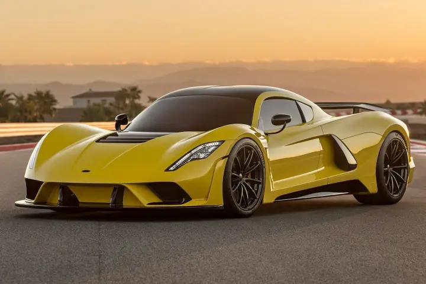
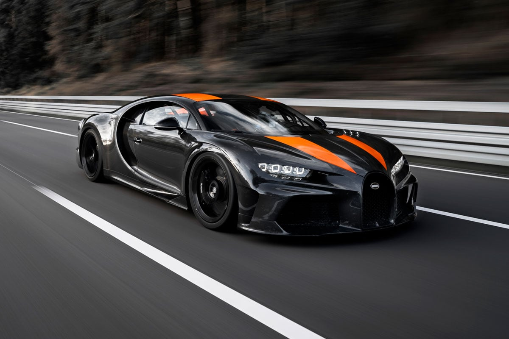
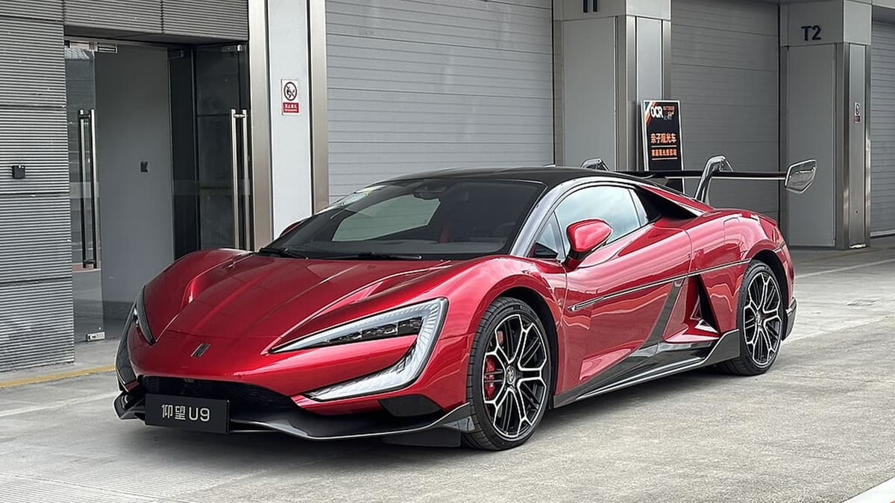
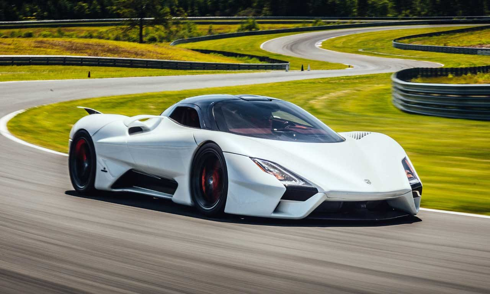
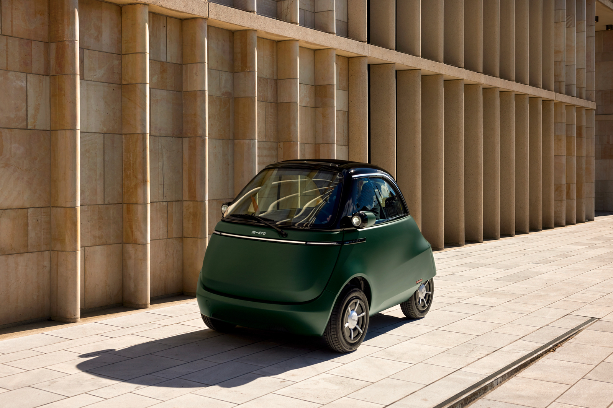
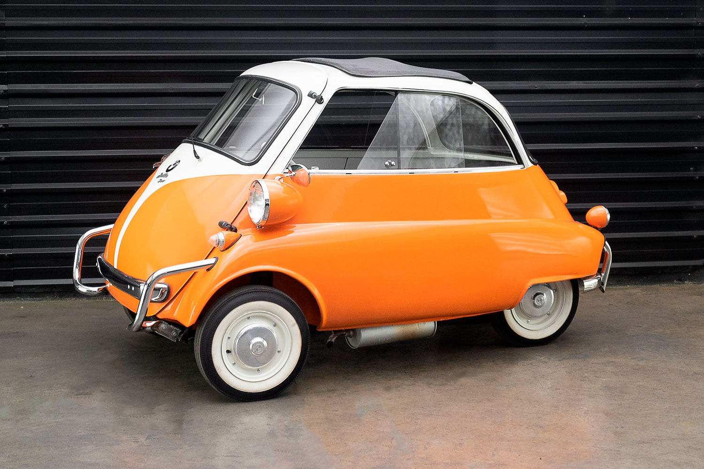
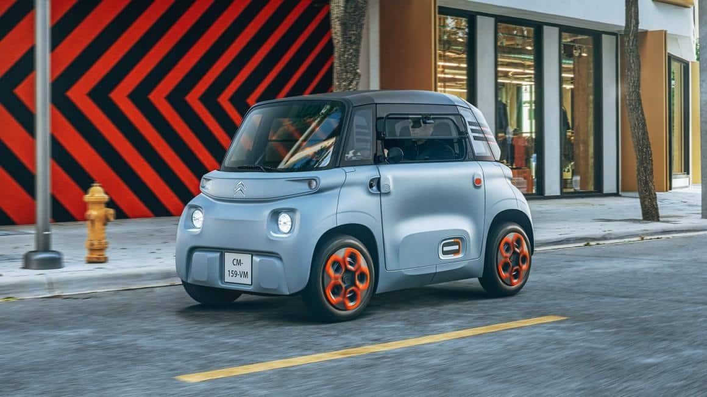
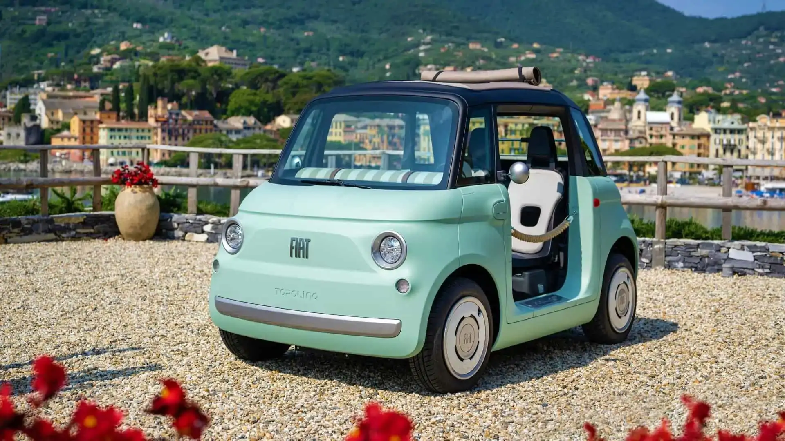

Lista dos 3 Mais Rápidos do Mundo
Conheça os carros que estão redefinindo os limites da velocidade automotiva:
| Modelo | Nome | KM/h Máx | 0-100 | Motor | Potência Total |
|---|---|---|---|---|---|
 |
Jesko Absolute | 531 | 2,79 Segundos | Koenigsegg V8 Biturbo | 1.600 cv |
|  | Hennessey Venom F5 | 499 | 2,6 Segundos | Fury V8 Biturbo | 1.817 cv |
|  | Bugatti Chiron SuperSport 300+ | 482,5 | 2,4 Segundos | W16 Quadriturbo | 1.600 cv |
|  | BYD U9 Track Edition | 472,41 | 2,3 Segundos | Quadrielétrico | 3.000 cv |
|  | SSC Tuatara | 455 | 2,5 Segundos | TT Tuatara V8 5.9 | 1.750 cv |
Lista dos 3 Mais Lentos do Mundo
Nem só de velocidade vive o automobilismo. Conheça os carros que priorizam o conforto e a eficiência:
| Modelo | Nome | KM/h Máx | 0-100~ | Motor | Potência Total |
|---|---|---|---|---|---|
|  | Micro Microlino | 90 | 9 Segundos | Elétrico 12,5kW | 15 cv |
|  | BMW Isetta | 85 | 9 Segundos | 4 Tempos monocilindro | 13 cv |
|  | Citroën Ami | 45 | 10 Segundos | Elétrico 6kW | 10 cv |
|  | Fiat Topolino | 45 | 10 Segundos | Elétrico 5,5kW | 10 cv |
| Renault Twizy 45 | 45 | 10 Segundos | Elétrico 4kW | 5 cv |